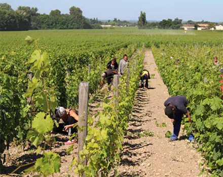

Gironde
Le vin attend des mesures
Les travailleurs saisonniers risquent de manquer dans les vignes qui vont avoir besoin de beucoup de main d’œuvre ». ARCHIVES LINDA DOUIFI
Economie - Marché au point mort, manque de main-d'oeuvre : la filière viticole, dont le Conseil interprofessionnel du vin de Bordeaux, avance des pistes pour encaisser la crise
L'épidémie de Covid a fait l'effet de la deuxième lame sur un secteur viticole déjà aux prises avec de grosses difficultés (baisse des ventes en grande distribution, brexit, taxes des Etats-Unis, troubles à Hong Kong...). Depuis la mise en place du confinement, le travail se poursuit dans les vignes girondines, mais d'autres écueils affleurent. Les marchés sont au point mort.
Même si des signes - de faible intensité - de relance apparaissent en Chine, l'obstacle est sévère pour la filière. Qu'il s'agisse du négoce ou de la viticulture bordelaise, comme française et même européenne d'ailleurs.
Alerte sur la main-d'oeuvre
Sur les exploitations girondines, la situation peut se résumer, à gros traits, comme suit : les cuves sont pleines, le précédent millésime n'est pas vendu, alors qu'une vendange, dans une année précoce, se profile. Un premier point dur doublé d'un second, la pénurie de main-d'oeuvre, alors que le travail dans les vignes, au printemps, en nécessite beaucoup. " Les travailleurs saisonniers hors espace Shengen ne viendront pas. Avec ceux appartenant à l'espace Shengen, nous n'aurons pas le compte ", prévient Bernard Farges, président du Conseil interprofessionnel du vin de Bordeaux (CIVB).